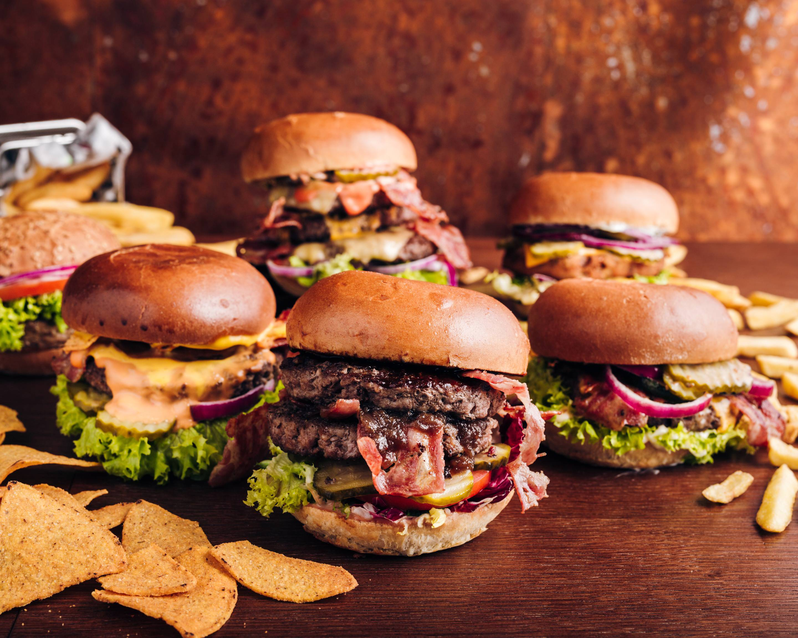

<app-modal [title]="''" [showButtons]="false">
  <div modal-body>
    
    <div class="mt-4 border-bottom border-3">
      <h2 class="h1">{{ restaurant.name }}</h2>
      <ul
        class="store__categories px-0 d-flex gap-1 border-bottom border-2 pb-3"
      >
        <li *ngFor="let category of restaurant.categories; let last = last">
          {{ category.name }}<span *ngIf="!last">,</span>
        </li>
      </ul>
      <div class="store__info d-flex align-items-center gap-3 mb-3">
        <i class="bi bi-geo-alt-fill fs-2"></i>
        <p class="fw-semibold" style="margin: 0">
          {{ restaurant.city }} - {{ restaurant.street }}
          {{ restaurant.buildingNumber }}<br />
          Województwo {{ restaurant.province }}, {{ restaurant.postCode }}
        </p>
        <button
          class="btn btn-copy p-0"
          (click)="copyAddressToClipboard()"
        >
          <i class="bi bi-copy fs-4 text-secondary"></i>
        </button>
      </div>
    </div>
    <div class="store__additional-info mt-3">
      <p class="fs-6 fw-normal">
        Sprzedaż prowadzona przez wyżej wymienionego przedsiębiorcę. Foodly
        zapewnia platformę technologiczną, która umożliwia użytkownikom 1.
        zawieranie umów sprzedaży jedzenia, napojów i artykułów niespożywczych z
        niezależnymi sprzedawcami oraz 2. korzystanie z usług dostawy
        świadczonych przez niezależnych dostawców lub sprzedawców.
      </p>
    </div>
  </div>
</app-modal>
